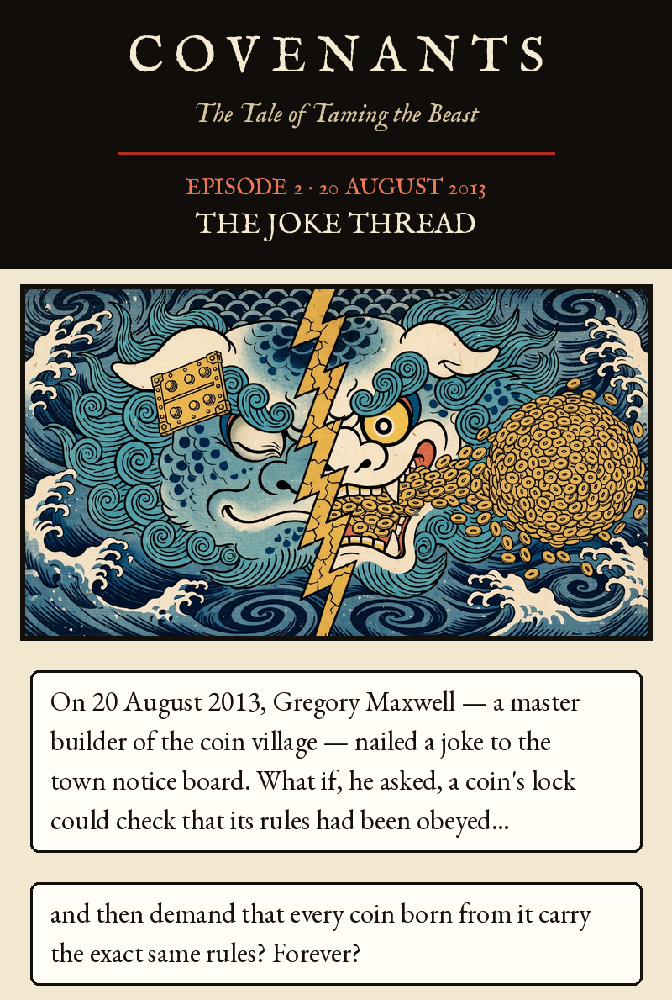
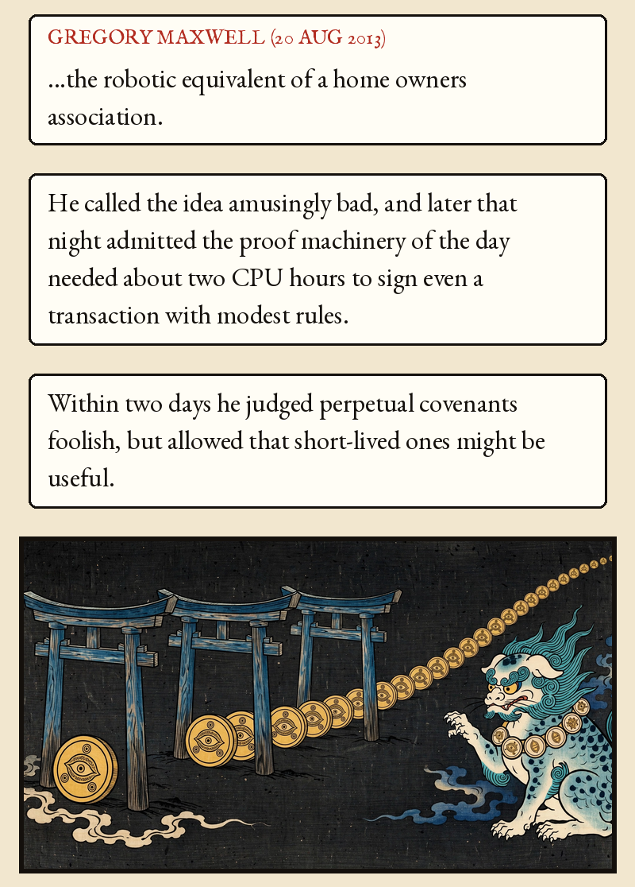
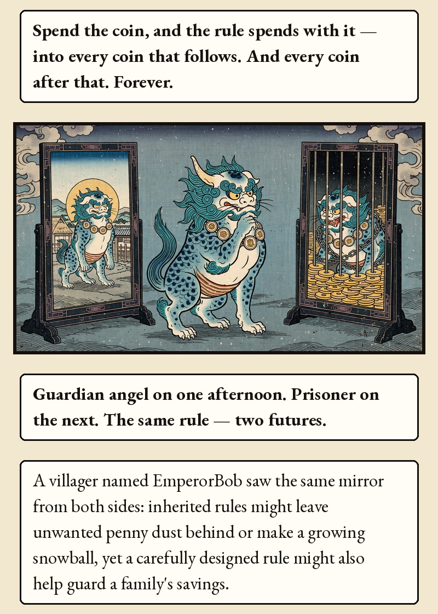
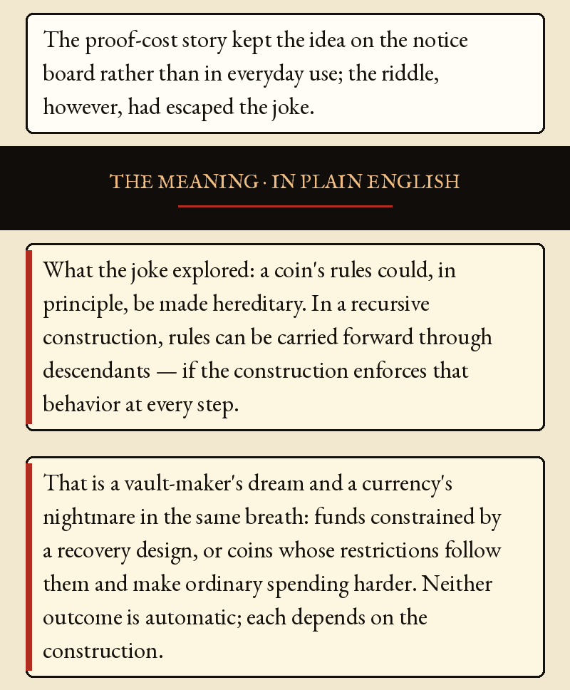
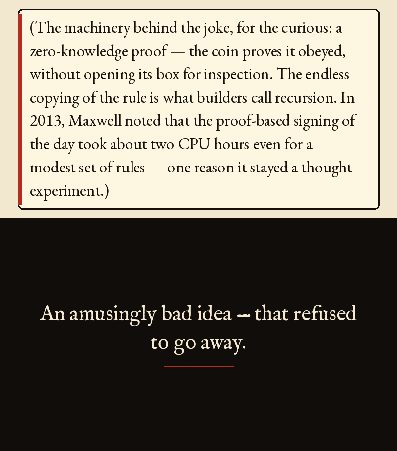
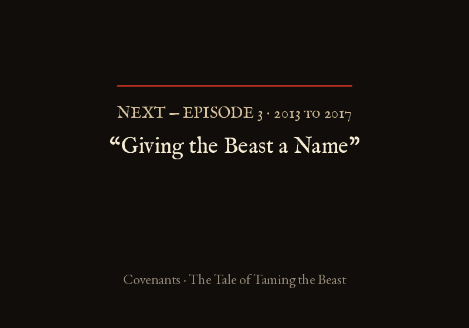

Episode 2 · The Joke Thread






Episode 2 · The Joke Thread — 20 August 2013
On 20 August 2013, Gregory Maxwell — a master builder of the coin village — nailed a joke to the town notice board. What if, he asked, a coin's lock could check that its rules had been obeyed… and then demand that every coin born from it carry the exact same rules? Forever?
GREGORY MAXWELL (20 AUG 2013): ...the robotic equivalent of a home owners association.
He called the idea amusingly bad, and later that night admitted the proof machinery of the day needed about two CPU hours to sign even a transaction with modest rules. Within two days he judged perpetual covenants foolish, but allowed that short-lived ones might be useful.
Spend the coin, and the rule spends with it — into every coin that follows. And every coin after that. Forever.
Guardian angel on one afternoon. Prisoner on the next. The same rule — two futures.
A villager named EmperorBob saw the same mirror from both sides: inherited rules might leave unwanted penny dust behind or make a growing snowball, yet a carefully designed rule might also help guard a family's savings. The proof-cost story kept the idea on the notice board rather than in everyday use; the riddle, however, had escaped the joke.
THE MEANING · IN PLAIN ENGLISH
What the joke explored: a coin's rules could, in principle, be made hereditary. In a recursive construction, rules can be carried forward through descendants — if the construction enforces that behavior at every step.
That is a vault-maker's dream and a currency's nightmare in the same breath: funds constrained by a recovery design, or coins whose restrictions follow them and make ordinary spending harder. Neither outcome is automatic; each depends on the construction.
(The machinery behind the joke, for the curious: a zero-knowledge proof — the coin proves it obeyed, without opening its box for inspection. The endless copying of the rule is what builders call recursion. In 2013, Maxwell noted that the proof-based signing of the day took about two CPU hours even for a modest set of rules — one reason it stayed a thought experiment.)
An amusingly bad idea — that refused to go away.
Gregory Maxwell's original BitcoinTalk thread (topic 278122): https://bitcointalk.org/index.php?topic=278122.0. Attribution map: Maxwell opened the thread on 20 Aug 2013 (the 'robotic equivalent of a home owners association' line; the two-CPU-hours remark later that day; the 22 Aug remark that perpetual covenants are foolish but short-lived ones may be useful). EmperorBob proposed snowballing outputs, spamcoin and the antitheft coin. jtimon proposed the Visa/Mastercard covenant (21 Aug). coastermonger proposed the 'thief's downfall' covenant (16 Sep 2013), which Carlton Banks nicknamed the 'personal chargeback' covenant. Peter Todd said his OP_MAST idea got close. Apart from the single quoted phrase, the episode's wording is a dramatization.